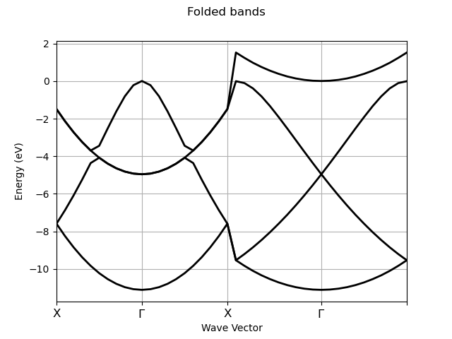

Note
Click here to download the full example code or to run this example in your browser via Binder
Unfolding with fold2bloch¶
This example shows how to plot the results produced by fold2bloch. <http://www.abinit.org/doc/helpfiles/for-v8.0/tutorial/lesson_fold2Bloch.html>
- 

Out:
================================= File Info =================================
Name: h6_FOLD2BLOCH.nc
Directory: /Users/gmatteo/git_repos/abipy/abipy/data/refs
Size: 35.26 kb
Access Time: Mon Nov 11 03:43:05 2019
Modification Time: Wed Mar 20 16:53:35 2019
Change Time: Wed Mar 20 16:53:35 2019
================================= Structure =================================
Full Formula (H6)
Reduced Formula: H2
abc : 1.587532 3.175063 4.762595
angles: 90.000000 90.000000 90.000000
Sites (6)
# SP a b c
--- ---- --- --- --------
0 H 0 0 0
1 H 0 0 0.333333
2 H 0 0 0.666667
3 H 0 0.5 0
4 H 0 0.5 0.333333
5 H 0 0.5 0.666667
Abinit Spacegroup: spgid: 0, num_spatial_symmetries: 48, has_timerev: True, symmorphic: True
============================== Electronic Bands ==============================
Number of electrons: 6.0, Fermi level: -1.060 (eV)
nsppol: 1, nkpt: 42, mband: 4, nspinor: 1, nspden: 1
smearing scheme: none (occopt 1), tsmear_eV: 0.272
WARNING: Cannot compute direct and fundamental gap.
Bandwidth: 11.116 (eV)
Valence maximum located at:
spin: 0, kpt: [+0.000, +0.000, +0.500], weight: 0.000, band: 2, eig: -1.060, occ: 2.000
TIP: Call set_fermie_to_vbm() to set the Fermi level to the VBM if this is a non-magnetic semiconductor
Direct lattice of the primitive cell:
abc : 1.587532 1.587532 1.587532
angles: 90.000000 90.000000 90.000000
Diagonal folding: [1 2 3]
from __future__ import division, print_function
from abipy import abilab
import abipy.data as abidata
with abilab.abiopen(abidata.ref_file("h6_FOLD2BLOCH.nc")) as ncfile:
print(ncfile)
# Plot folded bands
ncfile.ebands.plot(title="Folded bands")
# Plot unfolded bands along the path defined by kbounds.
kbounds = [0, 1/2, 0, 0, 0, 0, 0, 0, 1/2]
klabels = ["Y", r"$\Gamma$", "X"]
# sphinx_gallery_thumbnail_number = 2
ncfile.plot_unfolded(kbounds, klabels, title="Unfolded bands")
Total running time of the script: ( 0 minutes 0.389 seconds)